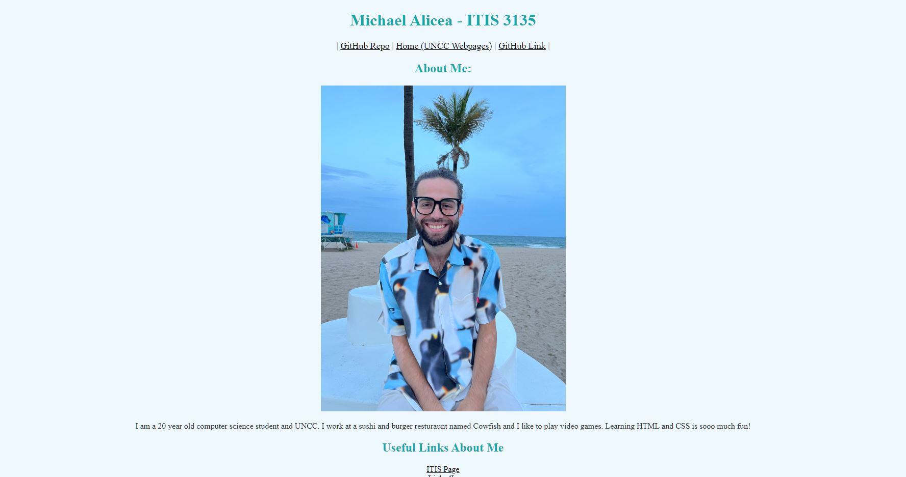

Michael Alicea's Site
Checklist:
-
1. Design
- I love the color scheme of the site, it really matches the beachy vibe put up from the intro picture. I do wish that the useful links section was organized horizontally rather than vertically, though.
-
2. Header? Main? Footer?
- All are present, along with validation in the footer. Nice job.
-
3. Other Feedback
- The intro picture seems a bit large when compared to the text size underneath. I'm also having some problems navigating between the links that are in the site.